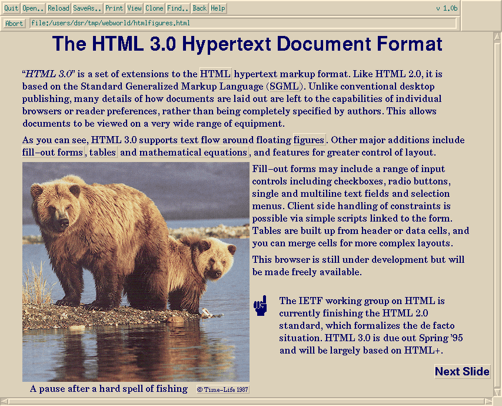
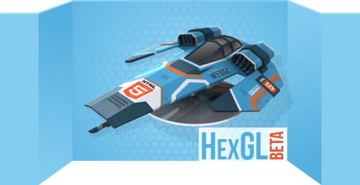
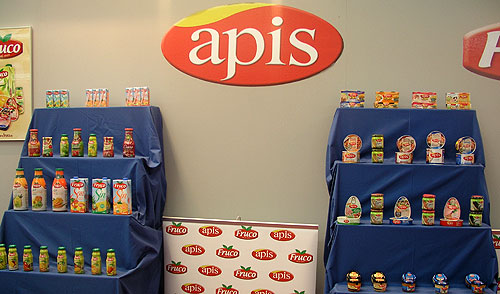

JavaScript: el lenguaje que mueve la Web
III Jornadas TIC para el PAS
Universidad de Sevilla
Abril, 2013
Y este quién es...
Python / JavaScript
developer @
... y organizador de
evolución de la web
Antes...
Navegador = visor de documentos
... Ahora
Navegador ~= sistema operativo
3 ingredientes

NO flash
NO Silverlight
NO Java applets
html5: familia de tecnologías


everywhere!
pero sobre todo un estándar

un buen sitio para empezar
Backend
Python

Ruby

PHP

Java

Frontend
JavaScript
En el pasado...
Algunos usos típicos
- Validación de formularios
- Pequeñas animaciones: copos de nieve, ...
- Manipulación del DOM
Considerado por muchos como un lenguaje de "juguete", JavaScript era un lenguaje poco comprendido y explotado hasta la fecha
Comienza a explotarse sus virtudes
- AJAX
- Patrones
- Bibliotecas
- Frameworks

... hasta convertirse en lo que es hoy, uno de los lenguajes más usados y con más proyección de futuro.
Y aunque inicialmente sólo podía utilizarse en los navegadores, hoy en día ya es posible usarlo en otros ámbitos
- Lenguaje de servidor (Node.js)
- Smartphones y tablets (Firefox OS)
- Widgets de escritorio (KDE, GNOME)
- Documentos PDF